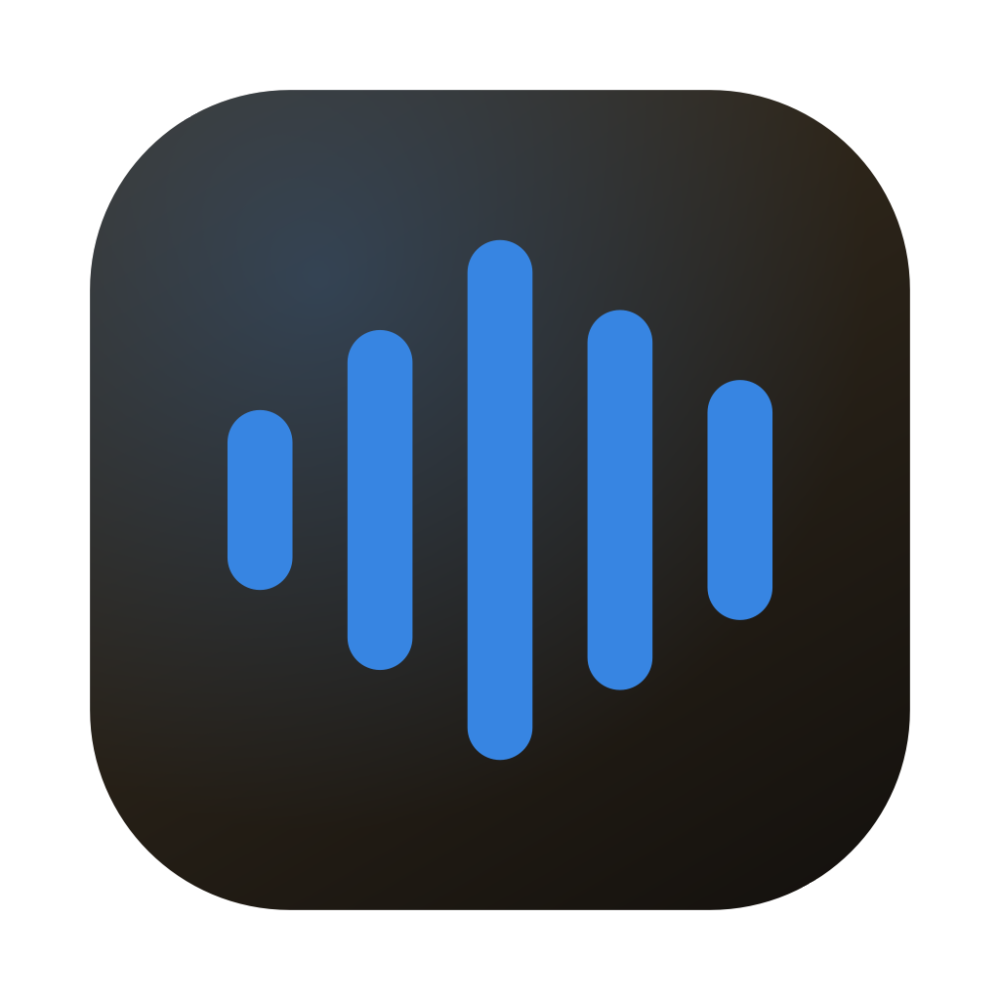
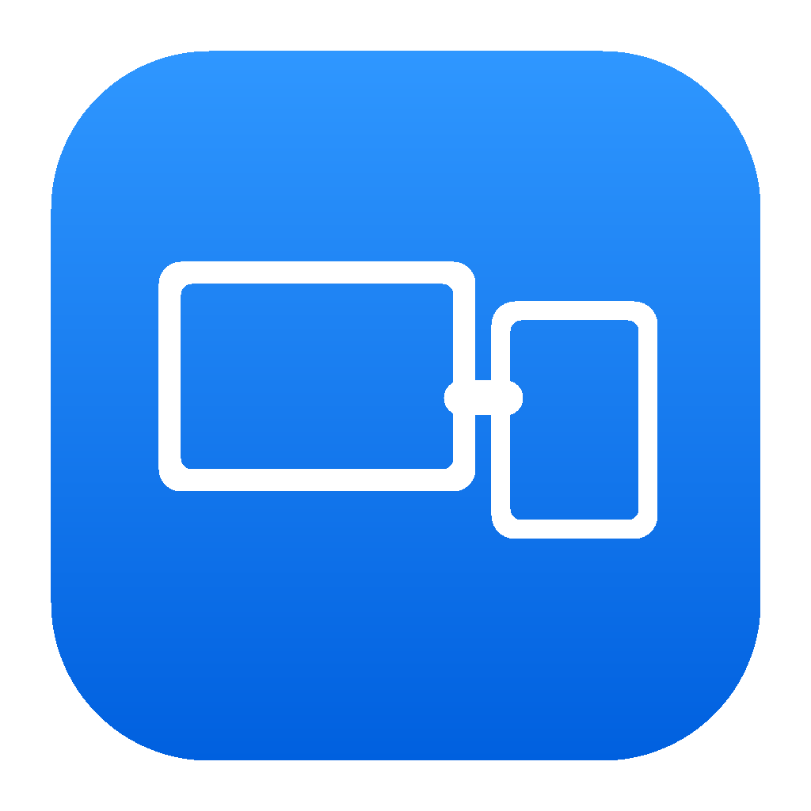
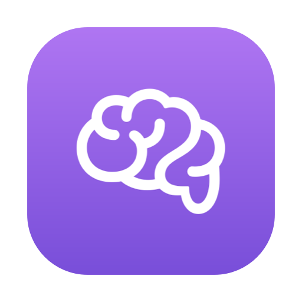

Ordenadas por relevancia para mi portafolio. Screen Bridge se presenta como prototipo experimental.

iVoz
Código público · prueba pendiente
Dictado local con historial, fragmentos de texto e inserción en apps de Mac.
SwiftUI · WhisperKit · Core ML
Límite actual: Funcionó bien al principio; aún falta diagnosticar una demora posterior.
Ver código en GitHub
iOrganize
Código público · prueba pendiente
Limpieza de archivos y reglas por carpeta, con acciones opcionales, control de duplicados y revisión antes de enviar a Papelera.
SwiftUI · AppKit · Foundation · CryptoKit
Límite actual: Revisá los archivos y scripts seleccionados antes de ejecutar la limpieza.
Ver código en GitHub

Screen Bridge
Experimental · código público
Pantalla extendida experimental de Mac a tablet a través de una red local de confianza.
Tauri · React · Rust · WebSockets · puente Objective-C
Límite actual: Experimental: API privada de macOS, demora perceptible y compatibilidad poco probada.
Ver código en GitHub
iStats
Código público · prueba pendiente
Panel compacto de CPU, memoria, red, disco y procesos principales.
SwiftUI · Swift Charts · API Mach/BSD
Límite actual: Utilidad pequeña con categorías de memoria estimadas; no reemplaza a Monitor de Actividad.
Ver código en GitHub

iBrain
Código público · prueba pendiente
Chat local con Ollama, conversaciones guardadas y modo nube opcional con tu propia clave.
SwiftUI · Ollama · Keychain · API de OpenAI/Anthropic
Límite actual: Necesita un modelo local; el modo nube envía el contexto al proveedor elegido.
Ver código en GitHub